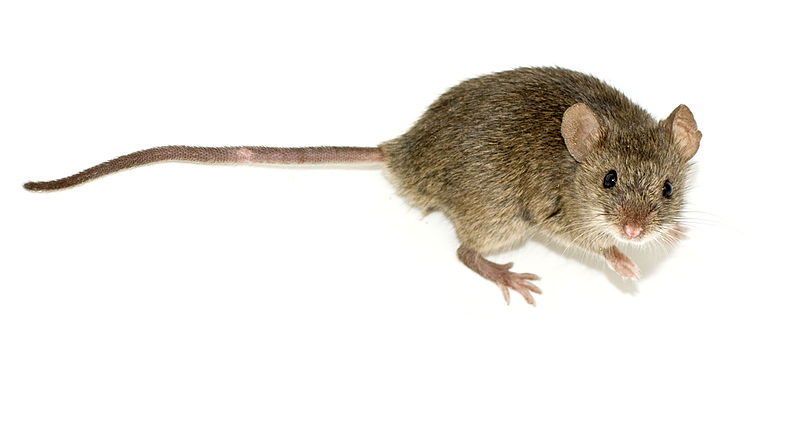

El ratón casero, ratón doméstico o ratón común (Mus musculus) es una especie de roedor miomorfo de la familia Muridae.2 Es la especie más frecuente de ratón. Se cree que es la segunda especie de mamíferos con mayor número de individuos, después de Homo sapiens. Los ratones saltan sobre sus dos patas traseras. Habita siempre cerca del hombre, con el que mantiene una relación de comensalismo. Es también el mamífero más utilizado en experimentos de laboratorio y existen multitud de variantes transgénicas que simulan enfermedades genéticas humanas. Está incluido en la lista 100 de las especies exóticas invasoras más dañinas del mundo3 de la Unión Internacional para la Conservación de la Naturaleza.
